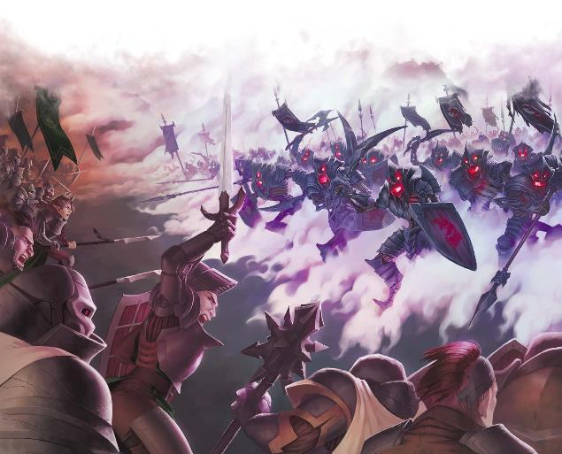

坎纳斯不死生物是非常高效的士兵。普通的僵尸需要某个死灵法师来维持和指挥它，但有感知能力的坎纳斯不死生物可以与任何单位融合。恐惧、饥饿和疲惫对他们来说都是陌生的。他们可以在完全黑暗中看到东西——这是相对于战俑的一个优势，也是坎纳斯在与塞尔的冲突中经常利用的优势。不死生物的少数局限性之一是他们完全缺乏仁慈或同情心。如果单独行动，坎纳斯骷髅会屠杀所有敌对势力——士兵、平民，甚至儿童。如果指挥官希望他的不死生物让任何人活着，他就必须严密控制。
奥达基尔仪式The Odakyr
Rites——用于创造坎纳斯亡灵的仪式——并不是一种廉价的死者复活形式。原来的牺牲者已经消失了。坎纳斯骷髅没有捐献骨头的战士的特定记忆。不死生物的军事特长反映了阵亡士兵的军事特长，所以只有弓箭手的骨头才能产生骷髅弓箭手。然而，骷髅的标准技能可不像活生生的士兵。瑞肯马克Rekkenmark不教授骷髅剑士常见的骨舞bone dance或双弯刀风格twin
scimitar style。那么，这些战斗方式从何而来呢？
吉纳尔·舒尔特Gyrnar Shult相信坎纳斯不死生物是由坎纳斯本身的尚武精神驱动的。这就是为什么它们只能从坎纳斯精锐士兵的尸体中生产出来：敌人的尸体与坎纳斯没有联系，而阵亡的农民则与战争没有联系。然而，[尸体收集官Corpse Collectors的现任指挥官]*担心不死生物并不是由坎纳斯的灵魂驱动的，而是由玛伯尔本身的一个侧面驱动的——不死生物的战斗风格可能是玛伯尔异界生物的战斗风格。多年来，他在自己的骷髅创造物中感受到了某种他无法解释的恶意，更不用说它们对杀戮的热爱了。他还考虑了他们被伊兰迪斯·沃尔Erandis Vol的卡巴林Qabalrin祖先的灵魂所碰触的可能性。[指挥官]还没有找到这些理论的任何证据，但它们却困扰着他的梦境。
坎纳斯不死生物从不表现出情感，也从不无缘无故地说话。如果没有理由移动，坎纳斯骷髅愿意一动不动地站好几天。士兵的名字通常是名字和编号的组合……而尸体原始身份的记录则隐藏在尸体收集官的典籍中。
坎纳斯骷髅独特的盔甲是为他们打造的，并安装在他们无肉的骨头上。骸骨要塞Fort Bones为此目的运营着一个小型锻造厂，尽管大部分盔甲都是在埃图尔的黑夜锻造厂Night Forge制造的。
—“艾伯伦之眼：骸骨要塞”，龙杂志#195“Eye
on Eberron: Fort Bones,” Dungeon 195
